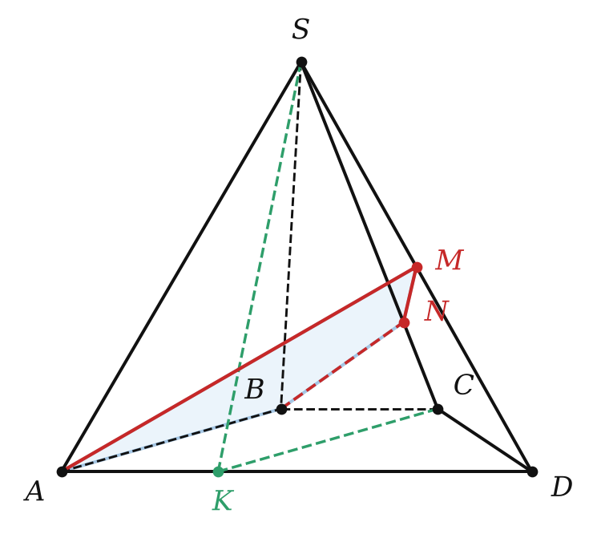

Теория
Что такое преобразование
Пусть дана фигура F. Каждой её точке по какому-нибудь правилу поставим в соответствие одну точку пространства. Все полученные точки образуют фигуру F₁. Говорят, что F₁ получена преобразованием фигуры F; F₁ — образ, F — прообраз. Ты уже встречал преобразования на плоскости в 9 классе — в пространстве всё устроено так же.
- Параллельный перенос: все точки сдвигаются в одном направлении на одно и то же расстояние (как ящик стола, который выдвигают).
- Центральная симметрия относительно точки O: точка X переходит в такую точку X₁, что O — середина отрезка XX₁.

Преобразование фигуры, сохраняющее расстояния между её точками, называют движением.
Докажем, что центральная симметрия — движение. Пусть A и B переходят в A₁ и B₁. Пересекающиеся прямые AA₁ и BB₁ задают плоскость (теорема 2.2). В ней треугольники AOB и A₁OB₁ равны по двум сторонам и углу между ними (OA = OA₁, OB = OB₁, вертикальные углы). Значит, AB = A₁B₁. Параллельный перенос — тоже движение.
Фигуру называют симметричной относительно точки O, если для каждой её точки симметричная точка тоже принадлежит фигуре. Точка O — центр симметрии.
Центр симметрии есть у шара (его центр), у куба и прямоугольного параллелепипеда (точка пересечения диагоналей; это докажем позже). У тетраэдра центра симметрии нет.
Две фигуры называют равными, если существует движение, переводящее одну в другую.
Преобразование, при котором все расстояния между точками изменяются в одно и то же число раз, называют преобразованием подобия; фигуры F и F₁ при этом — подобные.
Важное следствие: признаки равенства и подобия треугольников работают, даже если треугольники лежат в разных плоскостях. Подобны, например, любые два куба, любые два шара.
Параллельное проектирование
В солнечный день предметы отбрасывают тени. Солнце очень далеко, поэтому его лучи можно считать параллельными. Тень на ровной площадке — это пример параллельной проекции. Именно так мы рисуем пространственные фигуры на листе: рисунок в учебнике — это «тень» фигуры на плоскости страницы.
Даны плоскость α и пересекающая её прямая l. Через каждую точку фигуры F проведём прямую, параллельную l. Точки пересечения этих прямых с α образуют фигуру F₁ — параллельную проекцию фигуры F на плоскость α в направлении прямой l. Её ещё называют изображением фигуры.

Прямая, параллельная l, проектируется в точку; отрезок, параллельный l, — тоже в точку. Дальше говорим о прямых и отрезках, не параллельных l.
Параллельной проекцией прямой является прямая; параллельной проекцией отрезка является отрезок.
Почему: все проектирующие прямые, проходящие через точки прямой a, лежат в одной плоскости (ключевая задача 2 из § 4). Эта плоскость пересекает α по прямой — она и есть проекция.
Параллельной проекцией двух параллельных прямых являются или одна прямая, или две параллельные прямые. Проекции двух параллельных отрезков лежат на одной прямой или на параллельных прямых.
Отношение параллельных проекций отрезков, лежащих на одной прямой или на параллельных прямых, равно отношению самих отрезков.

Докажем для отрезков на одной прямой: пусть C лежит на отрезке AB, а A₁, C₁, B₁ — проекции. Проектирующие прямые AA₁, CC₁, BB₁ параллельны и пересекают прямую AB, поэтому лежат в одной плоскости; в ней же лежит прямая A₁B₁. Теперь это планиметрия: параллельные прямые высекают на сторонах угла (или на двух прямых) пропорциональные отрезки (теорема о пропорциональных отрезках). Значит, AC : CB = A₁C₁ : C₁B₁.
Для параллельных отрезков AB и CD в учебнике рассуждение длиннее: их проекции параллельны (7.2), и подобие треугольников сводит всё к уже доказанному случаю. ∎
Итак, при параллельном проектировании сохраняются: прямолинейность, параллельность, отношение отрезков на одной прямой и на параллельных прямых. В частности, середина отрезка проектируется в середину проекции. Не сохраняются: длины, углы, перпендикулярность.
Отношение сохраняется только для отрезков на одной прямой или на параллельных прямых. Отношение сторон треугольника AB : BC после проектирования может стать любым.
Разбор примеров
Точки A₁, B₁, C₁ — параллельные проекции точек A, B, C одной прямой, B лежит между A и C. AB = 6, BC = 9, A₁B₁ = 4. Найдите B₁C₁.
По теореме 7.3 B₁C₁ : A₁B₁ = BC : AB = 9 : 6. B₁C₁ = 4 · 9/6 = 6.

Верно ли, что если параллельные проекции двух прямых параллельны, то и сами прямые параллельны?
Неверно. В кубе ABCDA₁B₁C₁D₁ спроектируем прямые B₁C и AD₁ на плоскость ABC в направлении AA₁. Точка B₁ перейдёт в B, D₁ — в D, а C и A останутся на месте. Проекции — прямые BC и AD, они параллельны. А сами прямые скрещиваются. Параллельными они быть не могут: B₁C ∥ A₁D (A₁B₁CD — прямоугольник), и тогда по теореме 5.4 было бы AD₁ ∥ A₁D, а это диагонали квадрата — они пересекаются. Пересекаться они тоже не могут: B₁C лежит в грани BB₁C₁C, AD₁ — в противоположной грани, а у этих граней нет общих точек.

Основание пирамиды SABCD — трапеция, AD ∥ BC, AD = 3BC. M — середина SD, плоскость ABM пересекает ребро SC в точке N. Найдите SN : NC.
1) Спроектируем пирамиду на плоскость ASD в направлении прямой AB. Точка B перейдёт в A, точка C — в такую точку K на AD, что CK ∥ AB. ABCK — параллелограмм, AK = BC = AD/3.
2) Плоскость ABM содержит направление проектирования, поэтому вся проектируется в прямую AM — медиану треугольника ASD. Ребро SC проектируется в SK. Точка N переходит в точку P = AM ∩ SK, и по теореме 7.3 SN : NC = SP : PK.
3) Планиметрия в треугольнике ASD. Проведём через K прямую ∥ SD до пересечения с AM в точке T: KT = MD · AK/AD = MD/3 = SM/3. Треугольники PSM и PKT подобны: SP : PK = SM : KT = 3 : 1.
Задачи урока
Реши в тетради, к каждой задаче — чертёж. Разберём на занятии.
Тест к уроку
Домашнее задание
Задачи Д1–Д6 ниже. Из учебника: № 7.1, 7.4, 7.6, 7.10. Выучить определения движения, равных фигур, параллельной проекции; теоремы 7.1–7.3 (доказательство 7.3 для отрезков одной прямой).